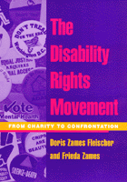

The struggle for disability rights in the U.S.
The struggle for disability rights in the U.S.


 The struggle for disability rights in the U.S.
The struggle for disability rights in the U.S.

|  |
The Disability Rights MovementFrom Charity to ConfrontationDoris Zames Fleischer and Frieda Zamespaper EAN: 978-1-56639-812-1 (ISBN: 1-56639-812-6) |
Frieda Zames is the recipient of the Eileen Healy Public Service Award, 2003
"More than a history, The Disability Rights Movement documents the wrenching evolution of attitudes: From isolation and charity to confrontation and rights; from sheltered workshops to independent living; from telethons of pity to technology's power; from 'cripples' and 'invalids' to People with disabilities! Comprehensive and well-written, Fleischer and Zames capture the substance and spirit of the disability rights movement and bring it to life."
—Frederick A. Fay, Ph.D., Chair, Justice for All, and disability rights advocate for four decades
Based on interviews with almost a hundred activists, this book provides a detailed history of the struggle for disability rights in the United States. It is a complex story of shifts in consciousness and shifts in policy, of changing focuses on particular disabilities such as blindness, deafness, polio, quadriplegia, psychiatric and developmental disabilities, chronic conditions (for example, cancer and heart disease), AIDS, and of activism and policymaking across disabilities.
Referring to the Americans with Disabilities Act as "every American's insurance policy," the authors recount the genesis of this civil rights approach to disability, from the almost forgotten disability activism of the 1930s, to the independent living movement of the 1970s, to the call for disability pride of the 1990s. Like other civil rights struggles, the disability rights movement took place in the streets and in the courts as activists fought for change in the schools, the workplace, and in the legal system. They continue to fight for effective access to the necessities of everyday life—to telephones, buses, planes, public buildings, restaurants, and toilets.
The history of disability rights mirrors the history of the country. Each World War sparked changes in disability policy and changes in medical technology as veterans without limbs and with other disabilities returned home. The empowerment of people with disabilities has become another chapter in the struggles over identity politics that began in the 1960s. Today, with the expanding ability of people with disabilities to enter the workforce and a growing elderly population, issues like longterm care are becoming increasingly significant at a time when HMOs are trying to contain health care expenditures.
"Doris Zames Fleischer and Frieda Zames take the reader on a guided tour through the still-brief history of the Disability Rights Movement, and they draw upon many first-person accounts to enrich the narrative. Although I was 'present at the creation' of much of this, I still learned a great deal. A unique feature of this book is the first-hand recounting of the remarkable work of the Disabled in Action (DIA) of New York. This group never gave up in their struggle to make the nation's biggest city accessible, despite enormous odds and powerful political opposition. Their story alone is worth the price of this book."
—Frank G. Bowe, Ph.D., Professor, Hofstra University, and author of Physical, Sensory and Health Disabilities
"Frieda Zames and Doris Zames Fleischer have crafted the most comprehensive history of the disability rights movement to date. Many firsthand sources and never-before-published interviews make this a must-read for anyone seeking to understand the roots of today's most pressing disability rights issues."
—Mary Johnson, Editor, Ragged EDGE
"This eye-opening work...offers one of the first thorough histories of a movement for civil rights that has profoundly changed America. ... A fascinating book."
—The Sacramento Bee
"Here at last is a book about our civil rights movement written by one of us: Frieda Zames, a polio survivor and activist....The Disability Rights Movement stands out for its insiders' point of view and the sheer thoroughness of ground covered. ...the authors turn what could have been a rather dry historical book into one that absolutely compels us to read on. They accomplish this not only through meticulous research, but also through their inclusion of information and opinions gleaned from interviews with movement leaders and other people whose lives have been directly affected. ...[the book] is far more than just a history book. It's a cautionary tale of rights won and now in jeopardy. It's a tale of a people who have won some legal battles but still face mass discrimination each day. ... It is an excellent beginning..."
—Sally Rosenthal, Ragged Edge
"Fleischer and Zames offer an encyclopedic treatment of the development of the disability rights movement...[They] provide a useful starting point for inquiries into a plethora of disability rights issues."
—New Political Science
"...the book plays a unique role in the literature on the disability movement because it is forward looking as well as historical in its approach. It is also extraordinarily well researched across a wide range of domains and contains a good bit of thoughtful analysis..."
—Social Service Review
"Fleischer and Zames's text deserves the label 'comprehensive history,' and it is a significant contribution to the literature of Disability Studies."
—Argumentation and Advocacy
"...an excellent primer on a wide variety of current disability issues..."
—Psychiatric Services
"Fleischer and Zames' concise and elegant overview of the current state of the disability rights movement...fills a huge void in the literature and hopefully will provoke greater examination of the issues at stake."
—Socialism and Democracy
"...makes an impressive contribution to the understanding of how social movements arise, organize and effectively address entrenched challenges of discrimination and social injustice.... the book is readable and engaging. It should be consulted by anyone interested in knowing how people who are discriminated against can overcome and bring about substantive social change."
—Journal of Sociology and Social Welfare
Personal Notes
Preface
Acknowledgments
Chronology
Abbreviations and Acronyms
1. "Wheelchair Bound" and "The Poster Child"
FDR, the "Cured Cripple" •
League of the Physically Handicapped •
The March of Dimes •
Parent-Initiated Childhood Disability Organizations •
The Poster Child and the Telethon •
Changing Views of Disability in the United States
2. Seeing by Touch, Hearing by Sign
Blindness and Deafness: A Comparison •
Sign Language and Oralism •
Braille and Talking Books •
Sheltered Workshops •
The Lighthouse •
Mobility for Blind People: Guide Dogs and White Canes •
Jacobus tenBroek and the National Federation of the Blind •
NYC Subway Gates: A Controversy in the Blind Community •
NFB: Trailblazer for Sections 504 and 501 •
NFB and ACB: Different Approaches to Blindness •
Deafness as Culture •
American Sign Language •
The Gallaudet University Uprising •
Black Deaf Advocates •
Education of Deaf Children •
Helen Keller, the Social Reformer
3. Deinstitutionalization and Independent Living
Deinstitutionalization •
Early Accessibility Efforts in the Colleges •
Ed Roberts and the Independent Living Movement •
Proliferation of the Independent Living Concept •
Characteristics of Independent Living Centers •
Independent Living as an Extension of Rehabilitation •
Evaluation of the Independent Living Movement •
Independent Living and the New Disability Activism
4. Groundbreaking Disability Rights Legislation: Section 504
The Cherry Lawsuit for the Section 504 Regulations •
Section 504 as a Spur to Political Organizing •
ACCD, Propelling Section 504 •
The Section 504 Demonstrations •
The Transbus Controversy •
Accessible Transit and New York City •
Bay Area Rapid Transit (BART) •
California Accessible Buses •
Mainstreaming Public Transit •
The Civil Rights Significance of Accessible Transportation
5. The Struggle for Change: In the Streets and in the Courts
Disabled In Action •
New York Lawyers for the Public Interest •
Recognizing Disability as a Civil Rights Issue •
Disability Rights Education and Defense Fund •
The Need for Disability Rights Attorneys •
ADAPT •
Justice For All
6. The Americans with Disabilities Act
Enacting the ADA •
The ADA and Section 504 •
Title I: Employment •
Title III: Public Accommodation •
Title II: Public Services (State and Local Government) •
Title II: Public Transportation •
Title IV: National Telephone Relay Service •
Title V: Miscellaneous •
The Supreme Court and the ADA •
The Myth of "The Disability Lobby" •
Backlash •
Every American’s Insurance Policy Log
7. Access to Jobs and Health Care
Employment Discrimination •
Affirmative Action •
Disability Employment in Corporate America •
Employment of People with Developmental Disabilities •
Employment of People with Psychiatric Disabilities •
The Criminalization of People with Psychiatric Disabilities •
Different Approaches to Psychiatric Disabilities •
Mangled Care •
A Two-Tier Health Care System •
People with Special Needs in Managed Care •
An Arbitrary Patchwork •
Falling through the Cracks: Children with Special Health Needs •
Long-Term Care in the Community •
Health Policy Reforms •
The Nexus between Jobs and Health Care
8. "Not Dead Yet" and Physician-Assisted Suicide
Opposition to "the Death Train" •
The Supreme Court •
AIDS Activists •
Pain Management •
Focus on Cure: A Pernicious Message •
The Eugenics Movement and Euthanasia •
The Politics of Physician-Assisted Suicide •
Netherlands "Slippery Slope" vs. U.S. "Political Strategy" •
First-Year Report on Physician-Assisted Suicide in Oregon •
Legalizing Disability Discrimination •
Dangers of an Inflexible Law •
"A Better Solution" •
The Distinction between Severe Disability and Terminal Illness
9. Disability and Technology
Universal Design •
Accessible Taxis •
Teletypewriters and Relay Systems •
A Clash of Cultures •
The One-Step Campaign •
Wheelchair Ingenuity •
Accessible Classrooms and Laboratories •
The Computer as an Accommodation •
Psychopharmacology •
Bioethical Dilemmas •
The Internet and a Miracle Baby •
Medical and Genetic Information •
"Slash, Burn, and Poison" •
Transforming Scientific Orthodoxy: AIDS Activism •
Toward a New Vision: Three Queries
10. Disabled Veterans Claim Their Rights
Legislation and Self-Advocacy •
Rehabilitation: The Man, Not the Wound •
Paralyzed Veterans of America •
Automobiles: Opening "New Vistas" •
The Pattern of Denial •
Atomic and Chemical Guinea Pigs •
Holding a Nation Accountable
11. Education: Integration in the Least Restrictive Environment
A "Quiet Revolution" •
Enforcing the IDEA: Early Efforts •
Least Restrictive Environment •
An Appropriate Identity •
The IDEA in the Courts •
The Special Education Controversy •
Somnolent Samantha •
A Microcosm of the Real World
12. Identity and Culture
Three Strands of the Movement •
Disability Pride: Celebrating Difference •
Changing Perceptions and the Media •
Assessment of the Movement •
A Stealth Movement
Notes
Index
Doris Zames Fleischer a full-time member of the Department of Humanities at New Jersey Institute of Technology since 1988, has written and lectured widely on issues related to disability rights.
 | The late Frieda Zames (1932-2005), Professor Emeritus of Mathematics at New Jersey Institute of Technology, was a much honored pioneer in securing rights for people with disabilities . Read tributes from The New York Times and New York Able. |
© 2015 Temple University. All Rights Reserved. This page: http://www.temple.edu/tempress/titles/1280_reg.html.